Anisha Vatnani is a mixed media artist based in Toronto/Dubai, working primarily in digital and 3D media. Her practice combines technical precision with experimentation across platforms, supported by a strong understanding of collaborative and production-driven workflows.
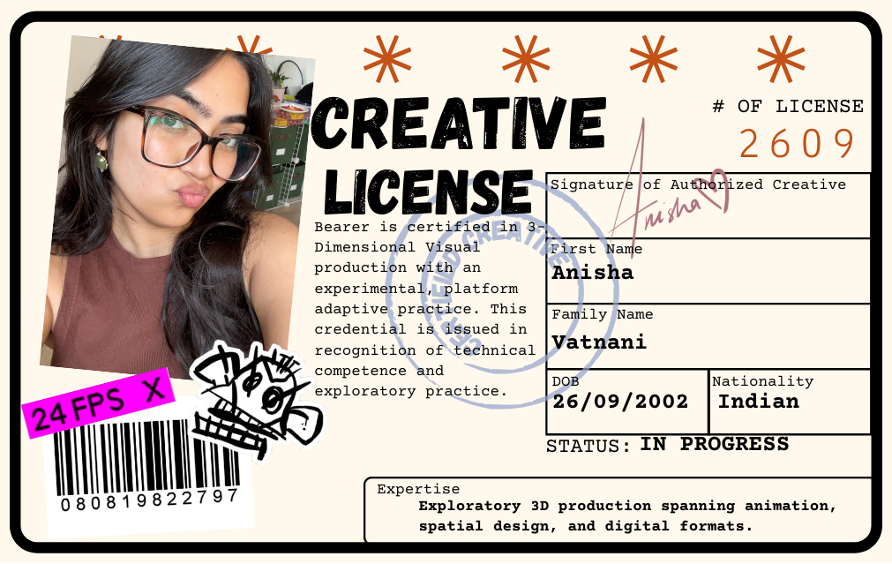
Māyā
Senior Year Thesis Project · 2025
Māyā is a choose-your-own-adventure game that delves into the philosophical concept of illusion, rooted in the Sanskrit term Māyā. While often translated as "illusion," Māyā suggests that the world we perceive is a distraction, obscuring the true reality.
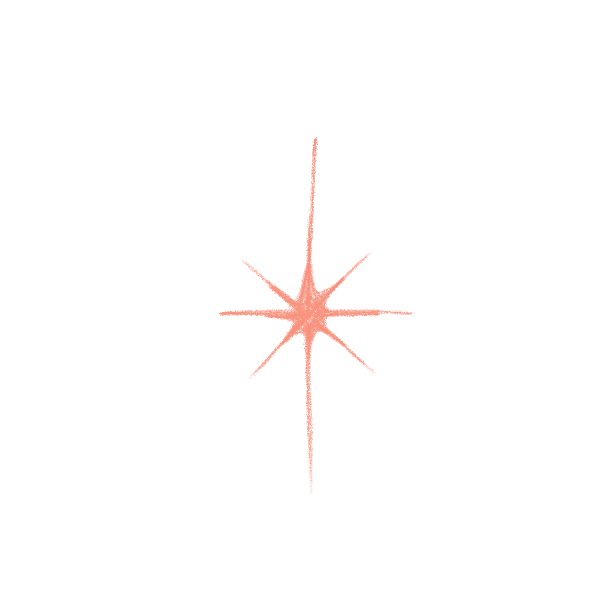
In Māyā, you are asked a simple question:
Do you accept the world in front of you... or do you question it?
Rooms shift. Memories fracture. Identity slips through your fingers. You move forward, unsure whether you are dreaming or awake.
You are given choices at every turn.
But each one quietly guides you back to the same room.
Maya explores the illusion of free will and the unsettling possibility that your reality was never yours to control...
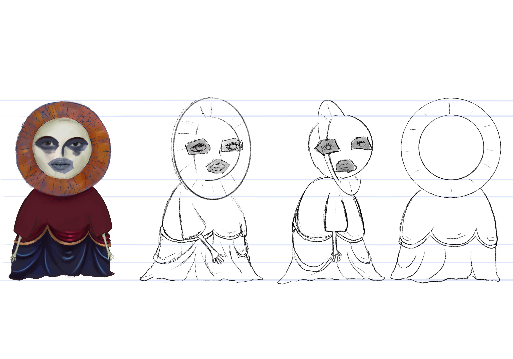
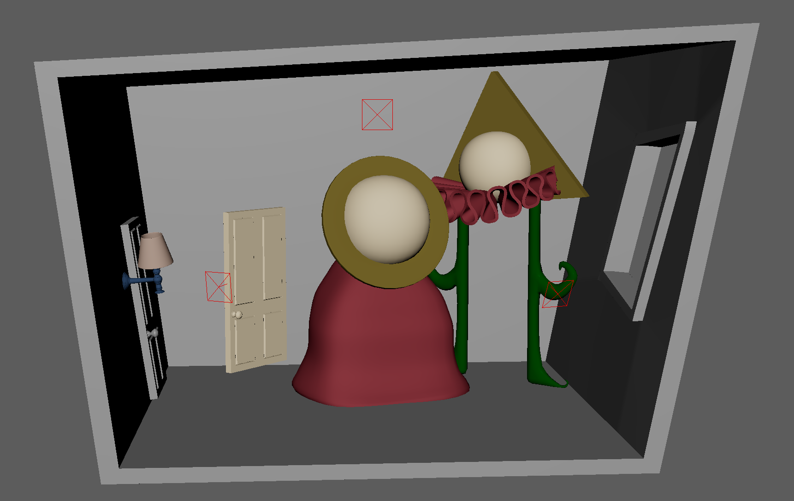
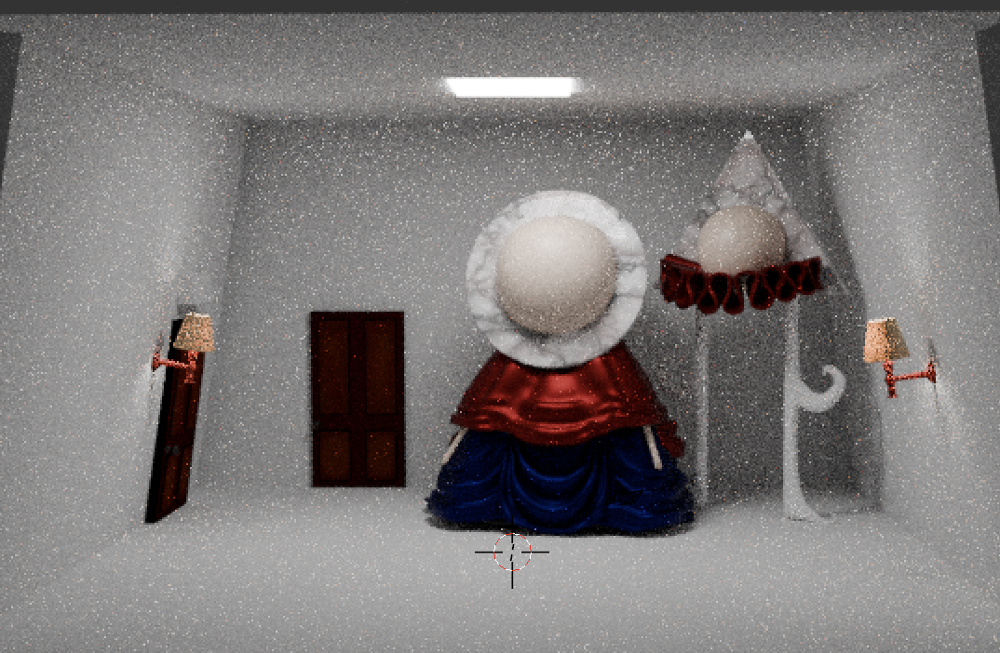
Maya was constructed with intention at every level.
I developed the script and directed the voice performance to create an unsettling, controlled tone throughout the experience. Each environment was 3D modeled from scratch, with extensive color and lighting tests to reinforce emotional shifts. Characters were designed, rigged, and integrated into the world to support the narrative structure.
What feels minimal on screen was carefully orchestrated behind the scenes.
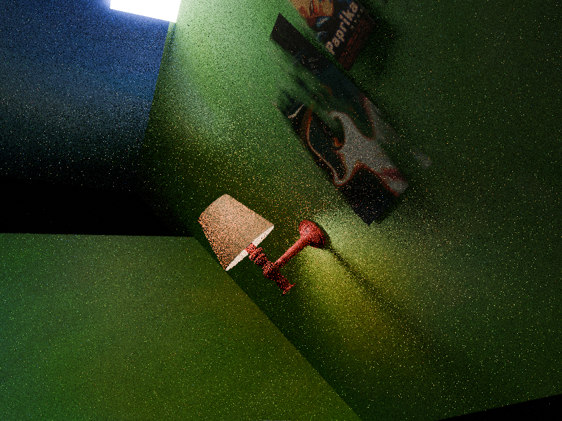
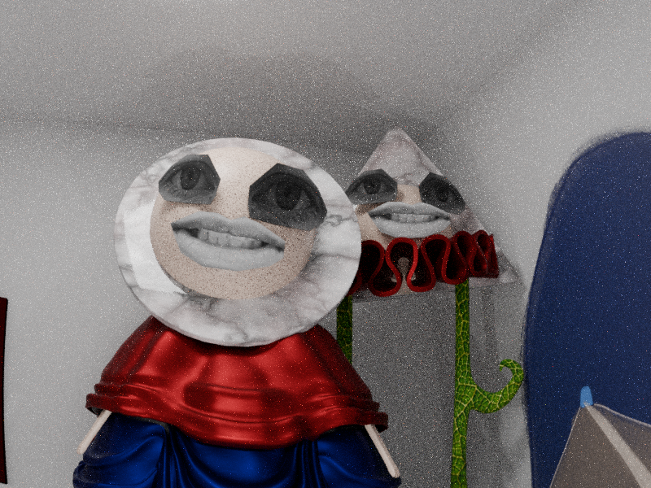
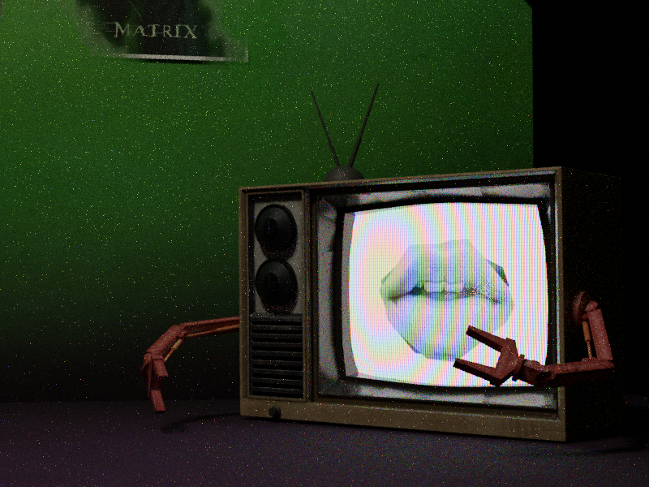
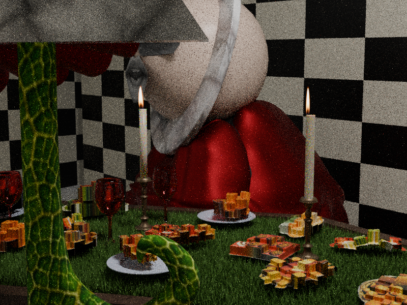
A series of in-game stills highlighting the lighting, grain, and tonal aesthetic of Maya.
Maya was built in 3JS for the web and paired with a custom minimalist joystick, developed with Aaryan Pashine. Engineered from scratch, the controller made choice feel intentional and consequential, shifting the experience with each new player.
Displayed on a 90s CRT television with surround sound, the retro installation heightened the game’s psychological tension, blurring the boundary between illusion and reality.
Players interacting with the game
An intentionally dim, curtained space layered with carpets and cushions drew focus to the glowing CRT, recreating the intimate nostalgia of sitting close to a box TV while amplifying the installation’s eerie atmosphere.
The project was additionally adapted into a short film, reinterpreting the interactive narrative for a seated audience.
The Boiling Point
2024
Embark on a chaotic journey with Raj into the world of chai in this short animation. "The Boiling Point". When Raj's mother leaves him all alone in an unknown territory, the Kitchen, he's left with no choice but to make chai for their guests. Raj's hilarious misadventures unfolds as he clumsily combines ingredients, overflows the pot, and leaves chaos in his wake. What he doesn't realize is the his unique mistakes lead to a surprisingly delightful brew.
"The Boiling Point" is a hybrid animation, seamlessly blending 3D and 2D styles, offering a warm toned, engaging story that unveils the magic of brewing a cup of chai.
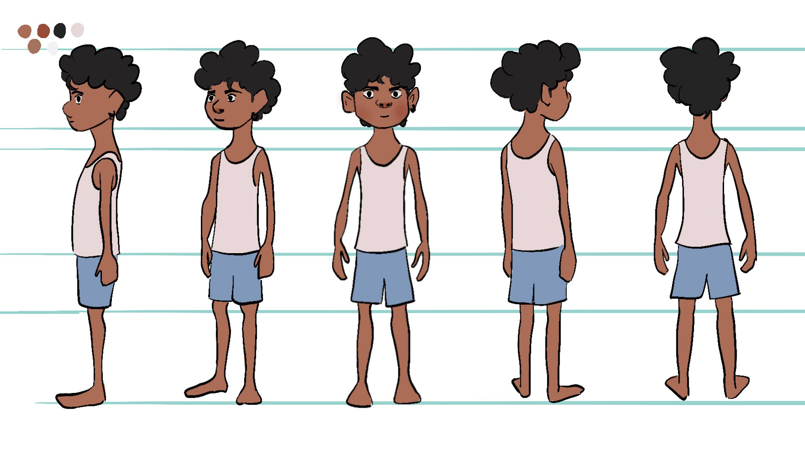
Raj is illustrated in 2D using Procreate, with expressive features that exaggerate every moment of panic. He wears a loose white vest and blue boxer shorts, the classic at-home summer outfit for young boys in India. The look keeps him familiar and relatable, while making his kitchen chaos feel even more endearing.
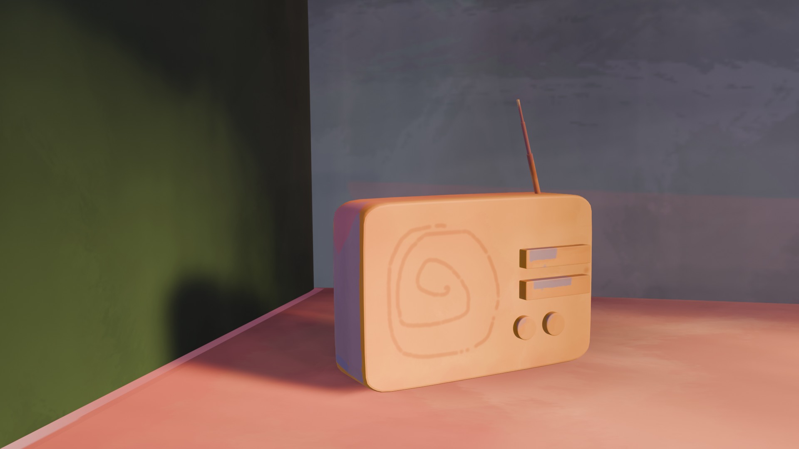
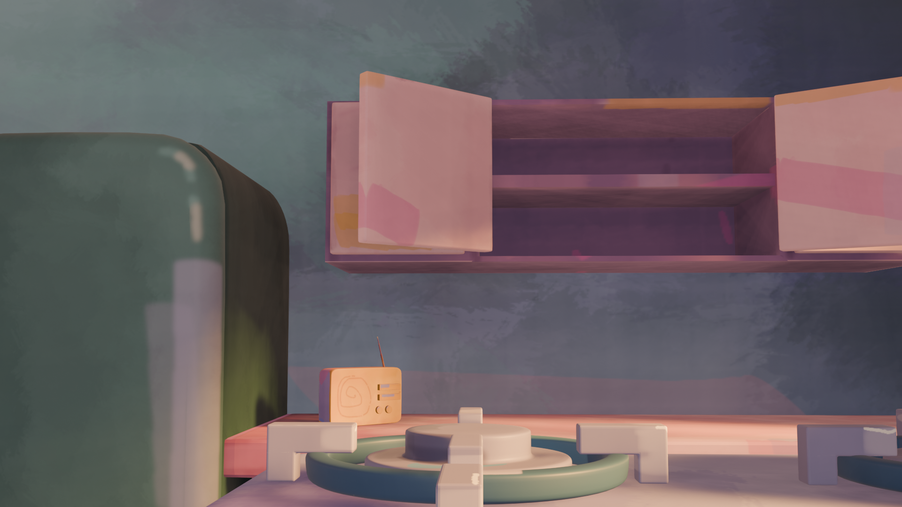
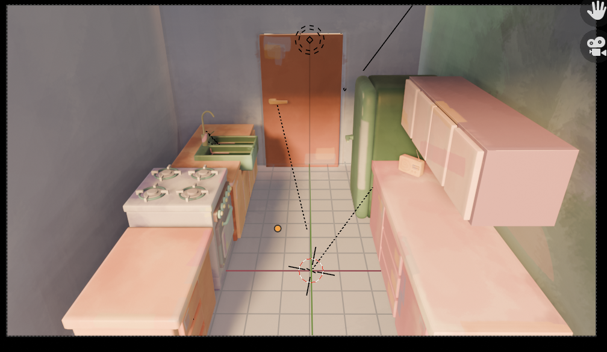
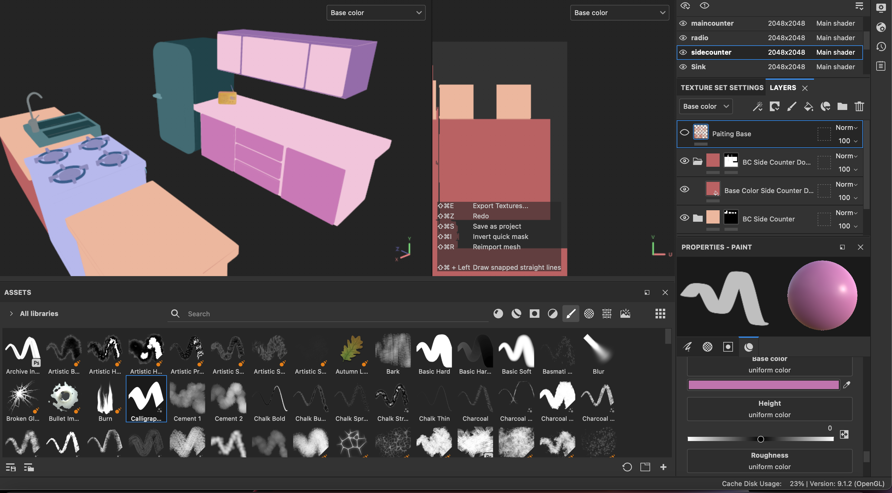
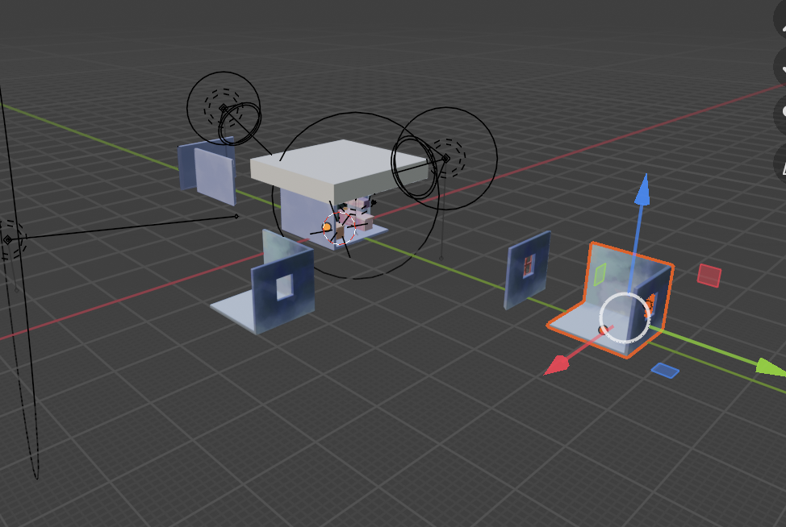
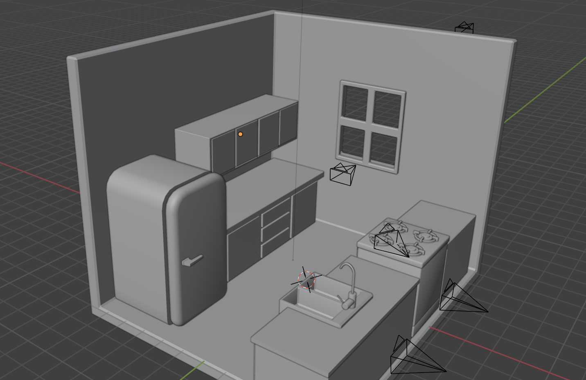
3D hand painted scenes and backgrounds
The kitchen background was the most fun part of this project for me. I modeled and animated everything in Blender, then textured and hand-painted each surface in Substance Painter.
Super cute project that made me feel so connected with me, my culture and my younger-self
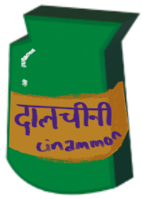
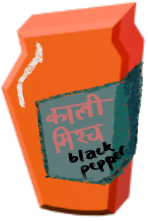
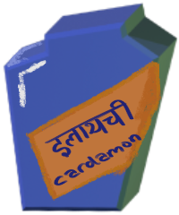
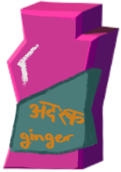
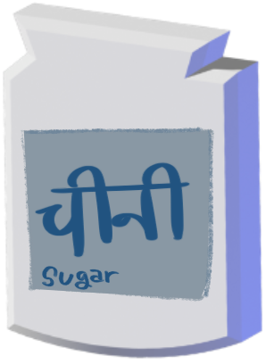
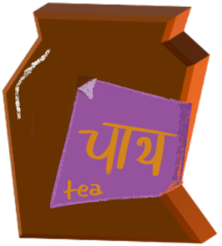
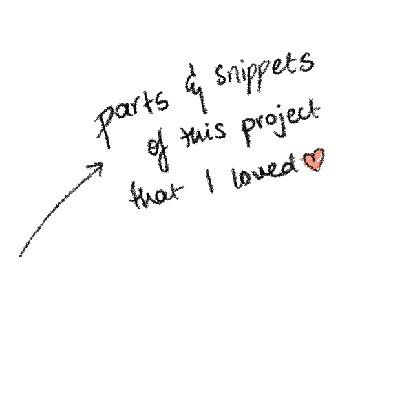
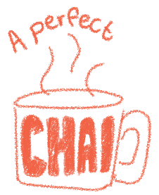
Traffic Jam
Game Jam Project · 2025
This was a fun little project developed with two close friends during a game jam, purely driven by experimentation and creative play. Using Godot, we created an isometric low-poly traffic control game where players manage the intersection traffic by manually toggling the traffic lights.
I was responsible for the visual development and asset creation. Using Blender for modelling and Substance Painter for texturing, I developed a cohesive hand-painted style optimized for speed and clarity.
Fun Fact: The game was actually inspired by the intersection I lived on, and coincidentally connected all of us in Toronto, ON, hence why it was even more fun to work on this together.